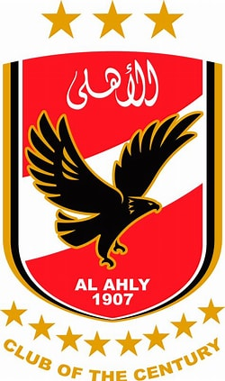
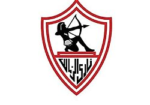

01 / THE BEGINNING
من البحر بدأت الحكاية
هوية مختلفة، وطموح يكبر موسم بعد موسم، وسط منافسة لا تهدأ.
هنا البحر له لون، والكورة لها صوت. حكاية نادي الجونة ومواجهاته مع أكبر أندية مصر، من قلب البحر الأحمر إلى ليالي الدوري المصري.
نادي الجونة حكاية مدينة على البحر الأحمر، وطموح كروي صنع لنفسه مكانًا في الكرة المصرية. وكل مواجهة كبيرة بتضيف فصل جديد للحكاية.
هوية مختلفة، وطموح يكبر موسم بعد موسم، وسط منافسة لا تهدأ.
هتاف، توتر، وفرحة بتعيش بعد صافرة النهاية.

كل كرة ممكن تغيّر شكل الليلة.
هنا هتلاقي الانتصارات الموثقة للجونة فقط أمام الأهلي والزمالك. التعادلات والهزائم مش معروضة في لوحة النتائج.

فوز تاريخي للجونة على الأهلي، 15 فبراير 2014.
المعروض هنا انتصارات موثقة مختارة فقط، وليس سجلًا كاملًا لكل انتصارات النادي. لا توجد تعادلات أو هزائم في هذه اللوحة.
شعارات الأندية الكبيرة التي تظهر هنا مرتبطة بانتصارات موثقة للجونة، وليست مجرد مواجهات.

15 فبراير 2014 · استاد الجونة

12 مارس 2024 · استاد خالد بشارة
KHALED BISHARA STADIUMفي كرة القدم، الملعب مش مجرد عشب وخطوط. هو المكان اللي بتتقابل فيه طموحات الفرق وضغط المنافسة وصوت الجمهور. واستاد خالد بشارة كان مسرحًا لمواجهات الجونة أمام الأهلي والزمالك.
من انتصارات حاسمة وأهداف في لحظات فارقة، كل فوز له حكايته الخاصة في ذاكرة جمهور الجونة.
استضاف استاد الجونة مباراة الأهلي والزمالك في دوري أبطال أفريقيا يوم 24 يوليو 2013، بعدما نُقلت المواجهة إلى ملعب محايد لأسباب أمنية. الصور التالية من تغطية رويترز للمباراة نفسها.
مصدر الصور: Reuters Connect. الصور الصحفية تحمل علامة مائية، وقد يتطلب استخدامها التجاري أو إعادة نشرها الحصول على ترخيص.
من البدايات إلى منافسة الكبار، فصول متتالية في رحلة نادي اختار يبني هويته على ساحل البحر الأحمر.
تأسيس نادي الجونة الرياضي.
الوصول إلى الدوري المصري الممتاز.
مباريات قوية أمام أندية القمة.
فصل جديد ينتظر جماهير الجونة.
أسماء ارتبطت بمشوار النادي عبر سنوات مختلفة. الاختيار هنا تكريمي ومبدئي، وليس ترتيبًا رسميًا لأفضل لاعبي النادي.
مهاجم مصري سابق، لعب بقميص الجونة ضمن محطات مشواره الكروي.
لاعب الأهلي السابق المعروف باسم شيتوس، ومن الأسماء التي ظهرت في سجل لاعبي الجونة.
مدافع سابق ارتبط اسمه بقائمة لاعبي الجونة في سنوات سابقة.
مهاجم مصري سابق، لعب للجونة ضمن مسيرته في الكرة المصرية.
مهاجم دولي سابق لعب للجونة في فترتين، بعد مشواره مع الزمالك.
الأسماء مستندة إلى أرشيف لاعبي النادي المنشور، وقد تختلف تعريفات «اللاعب التاريخي» حسب جمهور النادي.
من أضواء الملعب إلى لحظة الاحتفال، كرة القدم تجمع الناس على شغف واحد.


النتيجة بتتحفظ في الأرقام، لكن روح المباراة بتفضل في ذاكرة الجمهور. دي حكاية الجونة، ولسه فيها فصول جاية.
ارجع للبداية ↑